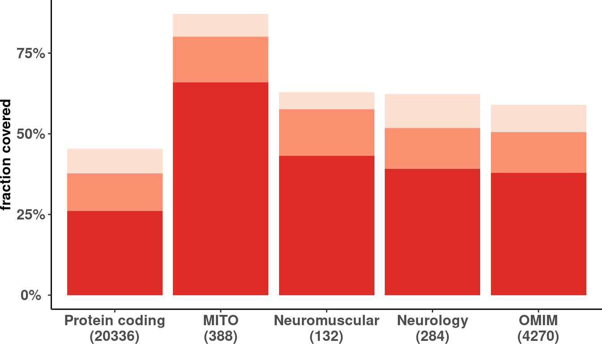

# Load config
source('src/config.R')
# Load disease genes table
# dis_genes <- fread('/s/project/mitoMultiOmics/multiOMICs_integration/datasets/disease_genes.tsv')
dis_genes <- fread(snakemake@input$disease_genes)
# Get all protein coding genes
# genecode_v29 <- fread('/s/project/mitoMultiOmics/multiOMICs_integration/datasets/gene_annotation_v29.tsv')
genecode_v29 <- fread(snakemake@input$gencode_annotation)
genecode_v29[, geneID := toupper(gene_name_unique)]
protein_coding <- genecode_v29[gene_type == 'protein_coding']
protein_coding[, DISEASE := 'Protein coding']
protein_coding <- protein_coding[geneID != "" & !is.na(geneID) , c("geneID", "DISEASE")]
protein_coding <- protein_coding[!duplicated(protein_coding)]
protein_coding[, total := .N]
protein_coding[, ORIGIN := 'genecode v29']
# Combine
dis_genes <- rbind( dis_genes, protein_coding)
dis_genes[ , geneID := toupper(geneID)]
dis_genes <- dis_genes[!duplicated(dis_genes)]
# Subset only protein coding genes
dis_genes <- dis_genes[geneID %in% unique(protein_coding$geneID)]
dis_genes[ , total := .N, by = DISEASE]
rm(protein_coding, genecode_v29)
dis_genes <- dis_genes[DISEASE %in% c("Protein coding", "MITO", "Neuromuscular", "Neurology", "OMIM" ) ]
####################################################################
# READ ANNOTATION
# sa <- fread('/s/project/mitoMultiOmics/multiOMICs_integration/raw_data/proteomics_annotation.tsv')
sa <- fread(snakemake@input$sample_annotation)
sa <- sa[USE_FOR_PROTEOMICS_PAPER == T]
# Read protein matrix
proteomics <- fread(snakemake@input$norm_data)
# proteomics <- fread('/s/project/mitoMultiOmics/multiOMICs_integration/processed_data/limma/proteomics_normalized_not_imputed.tsv')
colnames(proteomics)[1] <- "geneID"
proteomics_detected = melt(proteomics, id.vars= "geneID") %>% as.data.table()
# Subset for paper cases
proteomics_detected <- proteomics_detected[variable %in% sa$SAMPLE_ID ]
# Count genes detected once ...
proteomics_detected <- proteomics_detected[value > 0 , .N, by = "geneID"]
proteomics_detected[, once := T]
proteomics_detected[, half := N >= max(N)/2]
proteomics_detected[, all := N == max(N)]
proteomics_detected$N <- NULL
# write_tsv(proteomics_detected, '/s/project/mitoMultiOmics/multiOMICs_integration/processed_data/integration/detected_proteins.tsv')
write_tsv(proteomics_detected, snakemake@output$detected_proteins)
# Combine with dis gene list
dis_genes_fib <- merge(dis_genes, proteomics_detected, by = "geneID")
dis_genes_fib[, TISSUE := "Fibroblasts"]
dis_genes_fib[ once == T, ONCE_1 := .N, by = DISEASE ]
dis_genes_fib[ half == T, HALF_1 := .N, by = DISEASE ]
dis_genes_fib[ all == T, ALL := .N, by = DISEASE ]
dis_genes_fib <- dis_genes_fib[, c("TISSUE", "DISEASE", "total", "ONCE_1","HALF_1","ALL" )]
dis_genes_fib <- dis_genes_fib[!duplicated(dis_genes_fib)]
dis_genes_fib[, HALF := HALF_1 - ALL]
dis_genes_fib[, ONCE := ONCE_1 - HALF_1]
dis_genes_fib <- dis_genes_fib[, c("TISSUE", "DISEASE", "total", "ONCE","HALF","ALL" )]
dis_genes_fib <- dis_genes_fib[!is.na(ALL)]
detected_fib <- melt(dis_genes_fib, id.vars=c("TISSUE", "DISEASE", "total" )) %>% as.data.table()
detected_fib <- detected_fib[!duplicated(detected_fib)]
setnames(detected_fib, c("variable", "value" ), c("DETECTED", "N"))
detected_fib[, prop:= N / total ]
detected_fib$DISEASE <- factor(detected_fib$DISEASE, levels = c("Protein coding", "MITO", "Neuromuscular", "Neurology", "OMIM" ))
detected_fib$dis_n <- paste0(detected_fib$DISEASE, "\n" ,"(",detected_fib$total, ")")
# unique(detected_fib$dis_n)
detected_fib$dis_n <- factor(detected_fib$dis_n, levels = c("Protein coding\n(20336)", "MITO\n(388)", "Neuromuscular\n(132)", "Neurology\n(284)", "OMIM\n(4270)" ))
Proteomics coverage in fibroblasts
ggplot(detected_fib, aes(dis_n, prop)) +
geom_col(aes(fill = DETECTED)) + # stat= 'identity',
scale_y_continuous( labels=scales::percent) +
scale_fill_brewer(palette="Reds") +
labs( y = "fraction covered")+
theme_classic()+
theme(legend.position="none",
axis.title.y = element_text(face="bold", size=12) ,
axis.title.x = element_blank() ,
axis.text.x = element_text(size=12, face="bold") ,
legend.title = element_blank(), legend.direction = "horizontal",
axis.text.y = element_text(face="bold", size=12, hjust = 0.5),
plot.margin = margin(0, 0, 0, 0, "cm"))

# write_tsv(detected_fib, '/s/project/mitoMultiOmics/multiOMICs_integration/processed_data/integration/protein_coverage.tsv')
write_tsv(detected_fib, snakemake@output$protein_coverage)
IyctLS0KIycgdGl0bGU6IERpc2Vhc2UgZ2VuZSBjb3ZlcmFnZSBieSBwcm90ZW9taWNzCiMnIGF1dGhvcjogc21pcm5vdmQKIycgd2I6CiMnICBpbnB1dDogCiMnICAtIGdlbmNvZGVfYW5ub3RhdGlvbjogJ2BzbSBjb25maWdbIkRBVEFTRVRTIl0gKyAiL2dlbmVfYW5ub3RhdGlvbl92MjkudHN2ImAnCiMnICAtIGRpc2Vhc2VfZ2VuZXM6ICdgc20gY29uZmlnWyJEQVRBU0VUUyJdICsgIi9kaXNlYXNlX2dlbmVzLnRzdiJgJwojJyAgLSBzYW1wbGVfYW5ub3RhdGlvbjogJ2BzbSBjb25maWdbIkFOTk9UQVRJT04iXWAnCiMnICAtIG5vcm1fZGF0YTogJ2BzbSBjb25maWdbIlBST0NfREFUQSJdICsgIi9saW1tYS9wcm90ZW9taWNzX25vcm1hbGl6ZWRfbm90X2ltcHV0ZWQudHN2ImAnCiMnICBvdXRwdXQ6CiMnICAtIGRldGVjdGVkX3Byb3RlaW5zOiAnYHNtIGNvbmZpZ1siUFJPQ19EQVRBIl0gKyAiL2ludGVncmF0aW9uL2RldGVjdGVkX3Byb3RlaW5zLnRzdiJgJwojJyAgLSBwcm90ZWluX2NvdmVyYWdlOiAnYHNtIGNvbmZpZ1siUFJPQ19EQVRBIl0gKyAiL2ludGVncmF0aW9uL3Byb3RlaW5fY292ZXJhZ2UudHN2ImAnCiMnIG91dHB1dDogCiMnICAgaHRtbF9kb2N1bWVudDoKIycgICAgY29kZV9mb2xkaW5nOiBoaWRlCiMnICAgIGNvZGVfZG93bmxvYWQ6IFRSVUUKIyctLS0KCiMgTG9hZCBjb25maWcKc291cmNlKCdzcmMvY29uZmlnLlInKQoKCiMgTG9hZCBkaXNlYXNlIGdlbmVzIHRhYmxlCiMgZGlzX2dlbmVzIDwtIGZyZWFkKCcvcy9wcm9qZWN0L21pdG9NdWx0aU9taWNzL211bHRpT01JQ3NfaW50ZWdyYXRpb24vZGF0YXNldHMvZGlzZWFzZV9nZW5lcy50c3YnKQpkaXNfZ2VuZXMgPC0gZnJlYWQoc25ha2VtYWtlQGlucHV0JGRpc2Vhc2VfZ2VuZXMpCgoKIyBHZXQgYWxsIHByb3RlaW4gY29kaW5nIGdlbmVzCiMgZ2VuZWNvZGVfdjI5IDwtIGZyZWFkKCcvcy9wcm9qZWN0L21pdG9NdWx0aU9taWNzL211bHRpT01JQ3NfaW50ZWdyYXRpb24vZGF0YXNldHMvZ2VuZV9hbm5vdGF0aW9uX3YyOS50c3YnKQpnZW5lY29kZV92MjkgPC0gZnJlYWQoc25ha2VtYWtlQGlucHV0JGdlbmNvZGVfYW5ub3RhdGlvbikKZ2VuZWNvZGVfdjI5WywgZ2VuZUlEIDo9IHRvdXBwZXIoZ2VuZV9uYW1lX3VuaXF1ZSldCnByb3RlaW5fY29kaW5nIDwtIGdlbmVjb2RlX3YyOVtnZW5lX3R5cGUgPT0gJ3Byb3RlaW5fY29kaW5nJ10KcHJvdGVpbl9jb2RpbmdbLCBESVNFQVNFIDo9ICdQcm90ZWluIGNvZGluZyddCnByb3RlaW5fY29kaW5nIDwtIHByb3RlaW5fY29kaW5nW2dlbmVJRCAhPSAiIiAmICFpcy5uYShnZW5lSUQpICwgYygiZ2VuZUlEIiwgIkRJU0VBU0UiKV0KcHJvdGVpbl9jb2RpbmcgPC0gcHJvdGVpbl9jb2RpbmdbIWR1cGxpY2F0ZWQocHJvdGVpbl9jb2RpbmcpXQpwcm90ZWluX2NvZGluZ1ssIHRvdGFsIDo9IC5OXQpwcm90ZWluX2NvZGluZ1ssIE9SSUdJTiA6PSAnZ2VuZWNvZGUgdjI5J10KCiMgQ29tYmluZQpkaXNfZ2VuZXMgPC0gcmJpbmQoIGRpc19nZW5lcywgcHJvdGVpbl9jb2RpbmcpCmRpc19nZW5lc1sgLCBnZW5lSUQgOj0gdG91cHBlcihnZW5lSUQpXQpkaXNfZ2VuZXMgPC0gZGlzX2dlbmVzWyFkdXBsaWNhdGVkKGRpc19nZW5lcyldCgojIFN1YnNldCBvbmx5IHByb3RlaW4gY29kaW5nIGdlbmVzCmRpc19nZW5lcyA8LSBkaXNfZ2VuZXNbZ2VuZUlEICVpbiUgdW5pcXVlKHByb3RlaW5fY29kaW5nJGdlbmVJRCldCmRpc19nZW5lc1sgLCB0b3RhbCA6PSAuTiwgYnkgPSBESVNFQVNFXQpybShwcm90ZWluX2NvZGluZywgZ2VuZWNvZGVfdjI5KQoKZGlzX2dlbmVzIDwtIGRpc19nZW5lc1tESVNFQVNFICVpbiUgYygiUHJvdGVpbiBjb2RpbmciLCAiTUlUTyIsICJOZXVyb211c2N1bGFyIiwgIk5ldXJvbG9neSIsICJPTUlNIiApIF0KCiMjIyMjIyMjIyMjIyMjIyMjIyMjIyMjIyMjIyMjIyMjIyMjIyMjIyMjIyMjIyMjIyMjIyMjIyMjIyMjIyMjIyMjIyMjCgoKIyBSRUFEIEFOTk9UQVRJT04KIyBzYSA8LSBmcmVhZCgnL3MvcHJvamVjdC9taXRvTXVsdGlPbWljcy9tdWx0aU9NSUNzX2ludGVncmF0aW9uL3Jhd19kYXRhL3Byb3Rlb21pY3NfYW5ub3RhdGlvbi50c3YnKQpzYSA8LSBmcmVhZChzbmFrZW1ha2VAaW5wdXQkc2FtcGxlX2Fubm90YXRpb24pCnNhIDwtIHNhW1VTRV9GT1JfUFJPVEVPTUlDU19QQVBFUiA9PSBUXQoKCgojIFJlYWQgcHJvdGVpbiBtYXRyaXggCnByb3Rlb21pY3MgPC0gZnJlYWQoc25ha2VtYWtlQGlucHV0JG5vcm1fZGF0YSkKIyBwcm90ZW9taWNzIDwtIGZyZWFkKCcvcy9wcm9qZWN0L21pdG9NdWx0aU9taWNzL211bHRpT01JQ3NfaW50ZWdyYXRpb24vcHJvY2Vzc2VkX2RhdGEvbGltbWEvcHJvdGVvbWljc19ub3JtYWxpemVkX25vdF9pbXB1dGVkLnRzdicpCmNvbG5hbWVzKHByb3Rlb21pY3MpWzFdIDwtICAiZ2VuZUlEIgoKcHJvdGVvbWljc19kZXRlY3RlZCA9IG1lbHQocHJvdGVvbWljcywgaWQudmFycz0gImdlbmVJRCIpICU+JSBhcy5kYXRhLnRhYmxlKCkKCiMgU3Vic2V0IGZvciBwYXBlciBjYXNlcwpwcm90ZW9taWNzX2RldGVjdGVkIDwtIHByb3Rlb21pY3NfZGV0ZWN0ZWRbdmFyaWFibGUgJWluJSBzYSRTQU1QTEVfSUQgXQoKIyBDb3VudCBnZW5lcyBkZXRlY3RlZCBvbmNlIC4uLgpwcm90ZW9taWNzX2RldGVjdGVkIDwtIHByb3Rlb21pY3NfZGV0ZWN0ZWRbdmFsdWUgPiAwICwgLk4sIGJ5ID0gImdlbmVJRCJdCnByb3Rlb21pY3NfZGV0ZWN0ZWRbLCBvbmNlIDo9IFRdCnByb3Rlb21pY3NfZGV0ZWN0ZWRbLCBoYWxmIDo9ICBOID49IG1heChOKS8yXQpwcm90ZW9taWNzX2RldGVjdGVkWywgYWxsIDo9ICBOID09IG1heChOKV0KcHJvdGVvbWljc19kZXRlY3RlZCROIDwtIE5VTEwKCgojIHdyaXRlX3Rzdihwcm90ZW9taWNzX2RldGVjdGVkLCAnL3MvcHJvamVjdC9taXRvTXVsdGlPbWljcy9tdWx0aU9NSUNzX2ludGVncmF0aW9uL3Byb2Nlc3NlZF9kYXRhL2ludGVncmF0aW9uL2RldGVjdGVkX3Byb3RlaW5zLnRzdicpCndyaXRlX3Rzdihwcm90ZW9taWNzX2RldGVjdGVkLCAgc25ha2VtYWtlQG91dHB1dCRkZXRlY3RlZF9wcm90ZWlucykKCgojIENvbWJpbmUgd2l0aCBkaXMgZ2VuZSBsaXN0CmRpc19nZW5lc19maWIgPC0gbWVyZ2UoZGlzX2dlbmVzLCBwcm90ZW9taWNzX2RldGVjdGVkLCBieSA9ICJnZW5lSUQiKQpkaXNfZ2VuZXNfZmliWywgVElTU1VFIDo9ICJGaWJyb2JsYXN0cyJdCmRpc19nZW5lc19maWJbIG9uY2UgPT0gVCwgT05DRV8xIDo9IC5OLCBieSA9IERJU0VBU0UgXQpkaXNfZ2VuZXNfZmliWyBoYWxmID09IFQsIEhBTEZfMSA6PSAuTiwgYnkgPSBESVNFQVNFIF0KZGlzX2dlbmVzX2ZpYlsgYWxsID09IFQsIEFMTCA6PSAuTiwgYnkgPSBESVNFQVNFIF0KZGlzX2dlbmVzX2ZpYiA8LSBkaXNfZ2VuZXNfZmliWywgYygiVElTU1VFIiwgIkRJU0VBU0UiLCAidG90YWwiLCAiT05DRV8xIiwiSEFMRl8xIiwiQUxMIiAgKV0KZGlzX2dlbmVzX2ZpYiA8LSBkaXNfZ2VuZXNfZmliWyFkdXBsaWNhdGVkKGRpc19nZW5lc19maWIpXQpkaXNfZ2VuZXNfZmliWywgSEFMRiA6PSBIQUxGXzEgLSBBTExdCmRpc19nZW5lc19maWJbLCBPTkNFIDo9IE9OQ0VfMSAtIEhBTEZfMV0KZGlzX2dlbmVzX2ZpYiA8LSBkaXNfZ2VuZXNfZmliWywgYygiVElTU1VFIiwgIkRJU0VBU0UiLCAidG90YWwiLCAiT05DRSIsIkhBTEYiLCJBTEwiICApXQpkaXNfZ2VuZXNfZmliIDwtIGRpc19nZW5lc19maWJbIWlzLm5hKEFMTCldCgpkZXRlY3RlZF9maWIgPC0gbWVsdChkaXNfZ2VuZXNfZmliLCBpZC52YXJzPWMoIlRJU1NVRSIsICJESVNFQVNFIiwgInRvdGFsIiApKSAlPiUgYXMuZGF0YS50YWJsZSgpCmRldGVjdGVkX2ZpYiA8LSBkZXRlY3RlZF9maWJbIWR1cGxpY2F0ZWQoZGV0ZWN0ZWRfZmliKV0Kc2V0bmFtZXMoZGV0ZWN0ZWRfZmliLCBjKCJ2YXJpYWJsZSIsICJ2YWx1ZSIgKSwgYygiREVURUNURUQiLCAiTiIpKQpkZXRlY3RlZF9maWJbLCBwcm9wOj0gTiAvIHRvdGFsIF0KCgpkZXRlY3RlZF9maWIkRElTRUFTRSA8LSBmYWN0b3IoZGV0ZWN0ZWRfZmliJERJU0VBU0UsIGxldmVscyA9IGMoIlByb3RlaW4gY29kaW5nIiwgIk1JVE8iLCAiTmV1cm9tdXNjdWxhciIsICJOZXVyb2xvZ3kiLCAiT01JTSIgKSkKCmRldGVjdGVkX2ZpYiRkaXNfbiA8LSBwYXN0ZTAoZGV0ZWN0ZWRfZmliJERJU0VBU0UsICJcbiIgICwiKCIsZGV0ZWN0ZWRfZmliJHRvdGFsLCAiKSIpCiMgdW5pcXVlKGRldGVjdGVkX2ZpYiRkaXNfbikKZGV0ZWN0ZWRfZmliJGRpc19uIDwtIGZhY3RvcihkZXRlY3RlZF9maWIkZGlzX24sIGxldmVscyA9IGMoIlByb3RlaW4gY29kaW5nXG4oMjAzMzYpIiwgIk1JVE9cbigzODgpIiwgIk5ldXJvbXVzY3VsYXJcbigxMzIpIiwgIk5ldXJvbG9neVxuKDI4NCkiLCAiT01JTVxuKDQyNzApIiApKQoKCiMnICMgUHJvdGVvbWljcyBjb3ZlcmFnZSBpbiBmaWJyb2JsYXN0cwojKyBmaWcud2lkdGg9NywgZmlnLmhlaWdodD00CmdncGxvdChkZXRlY3RlZF9maWIsIGFlcyhkaXNfbiwgcHJvcCkpICsgCiAgZ2VvbV9jb2woYWVzKGZpbGwgPSBERVRFQ1RFRCkpICsgICMgc3RhdD0gJ2lkZW50aXR5JywgCiAgc2NhbGVfeV9jb250aW51b3VzKCBsYWJlbHM9c2NhbGVzOjpwZXJjZW50KSArCiAgc2NhbGVfZmlsbF9icmV3ZXIocGFsZXR0ZT0iUmVkcyIpICsKICBsYWJzKCB5ID0gImZyYWN0aW9uIGNvdmVyZWQiKSsKICB0aGVtZV9jbGFzc2ljKCkrCiAgdGhlbWUobGVnZW5kLnBvc2l0aW9uPSJub25lIiwgIAogICAgICAgIGF4aXMudGl0bGUueSA9IGVsZW1lbnRfdGV4dChmYWNlPSJib2xkIiwgc2l6ZT0xMikgLCAKICAgICAgICBheGlzLnRpdGxlLnggPSBlbGVtZW50X2JsYW5rKCkgLAogICAgICAgIGF4aXMudGV4dC54ID0gZWxlbWVudF90ZXh0KHNpemU9MTIsIGZhY2U9ImJvbGQiKSAsCiAgICAgICAgbGVnZW5kLnRpdGxlID0gZWxlbWVudF9ibGFuaygpLCBsZWdlbmQuZGlyZWN0aW9uID0gImhvcml6b250YWwiLCAKICAgICAgICBheGlzLnRleHQueSA9IGVsZW1lbnRfdGV4dChmYWNlPSJib2xkIiwgc2l6ZT0xMiwgaGp1c3QgPSAwLjUpLAogICAgICAgIHBsb3QubWFyZ2luID0gbWFyZ2luKDAsIDAsIDAsIDAsICJjbSIpKSAKCgojIHdyaXRlX3RzdihkZXRlY3RlZF9maWIsICcvcy9wcm9qZWN0L21pdG9NdWx0aU9taWNzL211bHRpT01JQ3NfaW50ZWdyYXRpb24vcHJvY2Vzc2VkX2RhdGEvaW50ZWdyYXRpb24vcHJvdGVpbl9jb3ZlcmFnZS50c3YnKQp3cml0ZV90c3YoZGV0ZWN0ZWRfZmliLCAgc25ha2VtYWtlQG91dHB1dCRwcm90ZWluX2NvdmVyYWdlKQoK